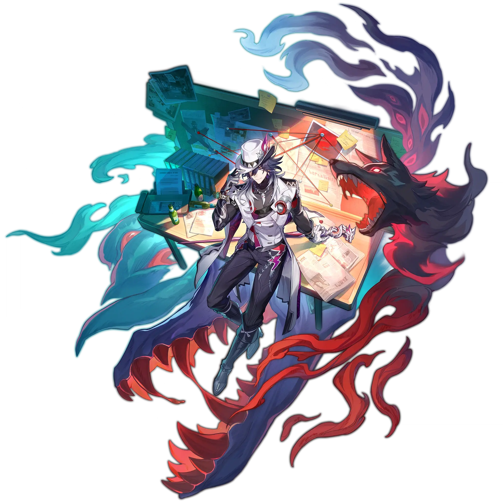

Ashveil
Best Ashveil build guide for Honkai Star Rail. See Ashveil's best Relics, Light Cones, teams, Eidolons, Trace priority, and how to play Ashveil.
🔍 Detail Skill
Semua skill aktif dan pasif beserta efeknya.
Deals Lightning DMG equal to #1[i]% of Ashveil's ATK to one designated enemy.
Makes one designated enemy become the "Bait," dealing it Lightning DMG equal to #1[i]% of Ashveil's ATK. If the target is already the "Bait," additionally deals it Lightning DMG equal to #2[i]% of Ashveil's ATK, and recovers 1 Skill Point(s). When the "Bait" exists on the field, all enemies' DEF gets reduced by #3[i]%. When there is no "Bait" on the field, Ashveil immediately makes the enemy targe
Ashveil has an initial Charge of 2 and can hold up to a max of 3. After the "Bait" gets attacked by other ally targets, Ashveil regenerates a fixed amount of 8 Energy, then consumes 1 Charge to launch Follow-Up ATK against the "Bait," dealing Lightning DMG equal to #1[i]% of Ashveil's ATK. Afterwards, gains 2 stack(s) of "Gluttony," stacking up to 12 time(s).
After using Technique, inflicts Daze on enemies within a set area for 10 second(s). Dazed enemies will not actively attack ally targets. When entering combat via actively attacking a Dazed enemy, deals Lightning DMG to all enemies equal to 100% of Ashveil's ATK, and grants Ashveil 1 Charge.
⚔ Light Cone Terbaik
Diurutkan dari yang paling kuat. Persentase menunjukkan performa relatif terhadap pilihan terbaik.
💎 Relic Set Terbaik
Set terbaik untuk karakter ini, diurutkan berdasarkan prioritas.
📊 Stat Utama
Stat yang dicari pada tiap slot.
👥 Tim yang Direkomendasikan
Karakter yang sering dipasangkan bersama Ashveil.
 Feixiao
Feixiao
 Mortenax Blade
Mortenax Blade
 Tribbie
Tribbie
 Silver Wolf
Silver Wolf
🔗 Lanjutkan
Build ini dirangkum dari Prydwen Institute. Starwise tidak menghitung sendiri. Angka bisa berubah setelah patch atau karakter baru rilis.